1 · Задача → решение
«Задача — решение»
Обычное утро на предприятии и задачи, которые знакомы каждому, кто отвечает за СИЗ.
Treagra Safety — не просто поставщик, а партнёр: от экипировки и учёта до операционного сопровождения.
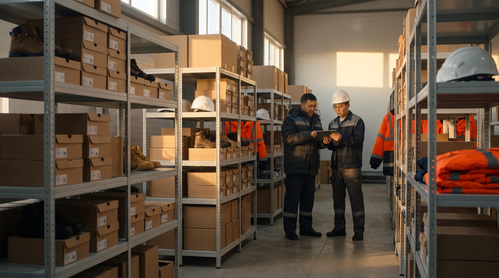
Три варианта делового ролика о Treagra Safety. Каждый начинается с задач, знакомых любому предприятию, и показывает, как их решает ваша платформа учёта СИЗ и насколько удобно в ней работать. Выберите вариант — по нему пишем финальный сценарий.
Все три начинаются с задач предприятия и показывают решения в платформе. Отличается подача: каждая задача сразу со своим решением, задачи блоком и затем демонстрация платформы, или задачи каждого отдела.
Обычное утро на предприятии и задачи, которые знакомы каждому, кто отвечает за СИЗ.
Treagra Safety — не просто поставщик, а партнёр: от экипировки и учёта до операционного сопровождения.
Обычный рабочий день и трудности каждого участника процесса — а затем реальный рабочий процесс в платформе Treagra: от первого входа до отчётов, каждый раздел отвечает на вопрос, который возникает в работе.
Treagra Safety — не просто платформа учёта СИЗ, а партнёр, который выстраивает обеспечение вместе с вами.
В обеспечении СИЗ участвуют охрана труда, склад, снабжение, сотрудник, производство, финансы и руководство.
Treagra Safety — одна система и один партнёр для всех, кто отвечает за обеспечение СИЗ.
Задачи предприятия и решения в платформе Treagra. Все разделы платформы со скриншотов: карточка работника и онлайн-подтверждение выдачи, матрица норм и блокировки, календарь автозамен с просрочками, склад и остатки, личный кабинет, охрана труда, дашборды для руководства и исполнителей, бюджет и отчёты. Партнёры Jeta Safety, Safety Jogger и SIR Safety. Команда Treagra, стирка, химчистка и аренда спецодежды, гибкий формат работы. Финал — что получает предприятие, а в третьем варианте — каждый отдел.
Данные демонстрационные.
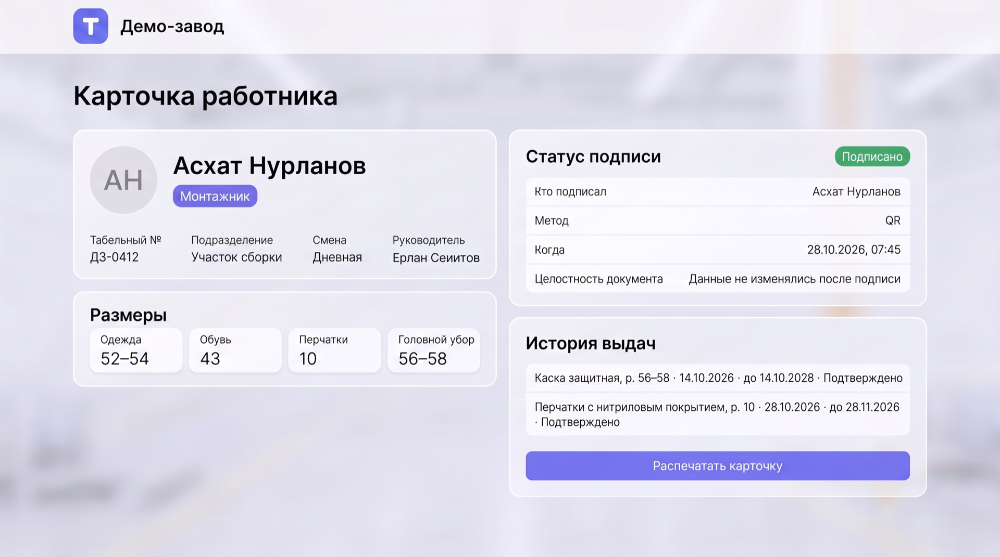
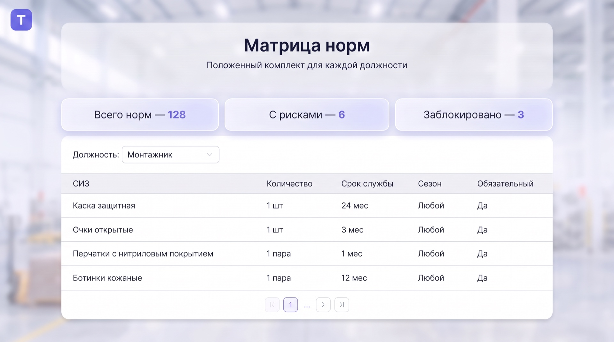
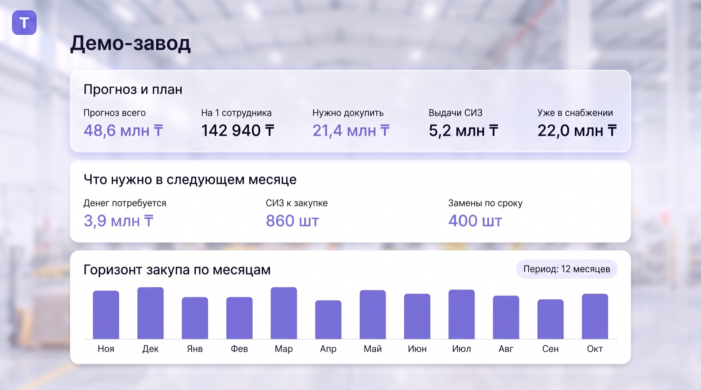
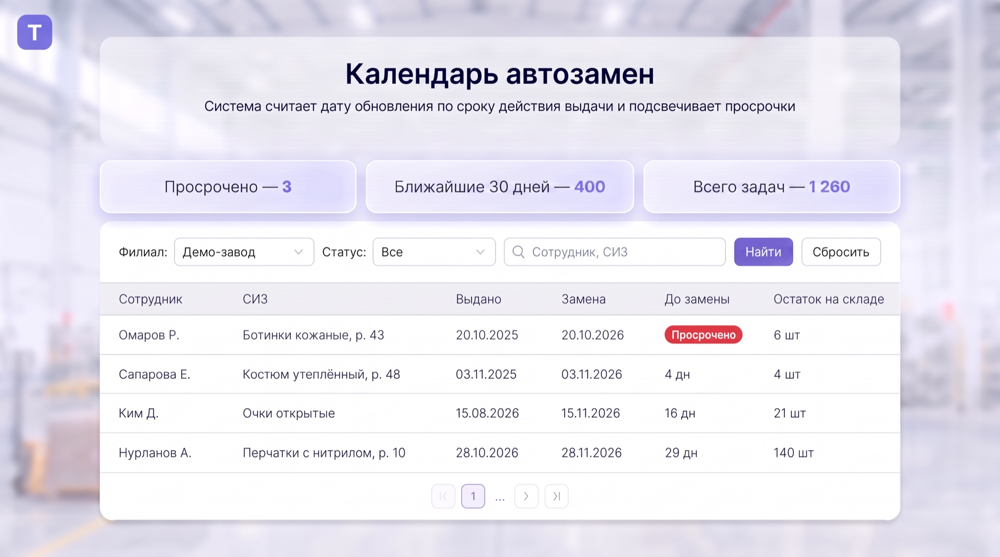
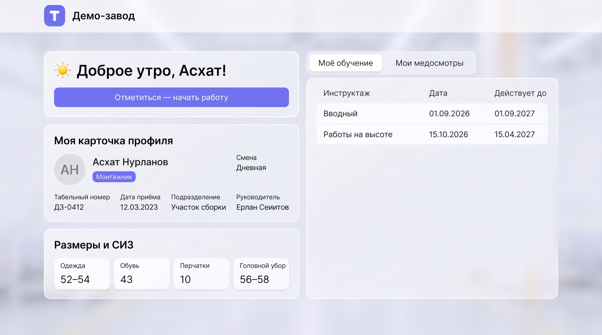
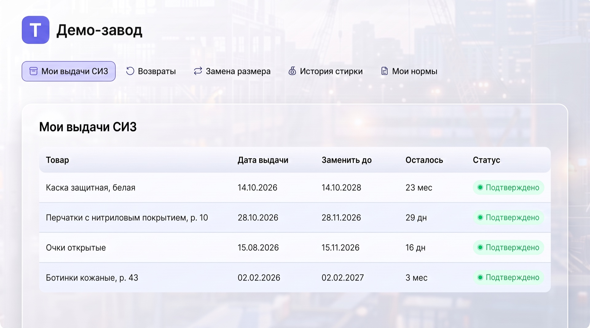
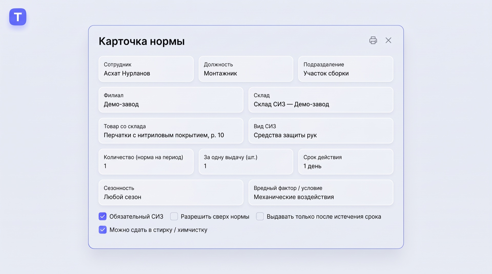
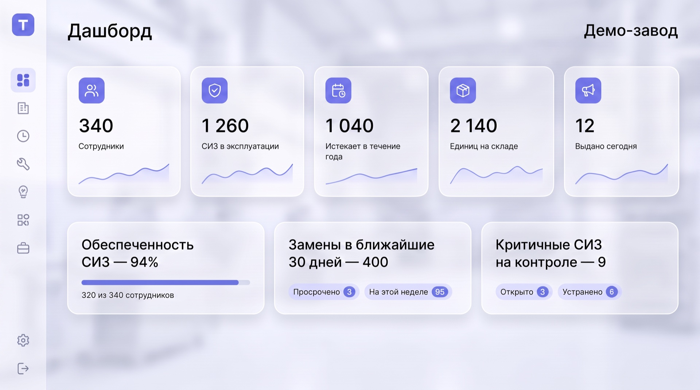
В ролике — оригинальные логотипы. Treagra Safety — главный, партнёры — рядом с их продукцией.
Treagra Safety — не просто поставщик, а партнёр: от экипировки и учёта до операционного сопровождения.
Обычное утро на предприятии и задачи, которые знакомы каждому, кто отвечает за СИЗ. Затем каждая задача разбирается отдельно: как это бывает сейчас и как это решается в платформе Treagra. Рассказ ведётся через одного сотрудника — монтажника Асхата Нурланова: на его примере видно, как работает каждое решение. После платформы — команда сопровождения, сервис, гибкие форматы и то, что получает предприятие.
Утро на предприятии → четыре задачи → Treagra и партнёры → бумажный учёт и карточка работника → выдача без правил и матрица норм → сроки и размеры и календарь автозамен → разрозненные данные и дашборды → удобство платформы → личный кабинет → охрана труда → команда Treagra → стирка, химчистка и аренда → гибкий формат работы → зачем СИЗ на аутсорсинг и что получает предприятие → финал с запуском на одном участке.
Для каждой задачи — короткая живая сцена на предприятии, затем переход в экран платформы. Экраны крупно, с подсветкой нужных элементов. Сквозной герой — Асхат: он получает комплект, подтверждает выдачу, видит свою замену в личном кабинете.
Спокойная деловая музыка с мягким подъёмом на решениях. Монтаж в ритме «живая сцена — экран»: сначала задача, затем крупный план интерфейса с подсветкой и короткий титр.
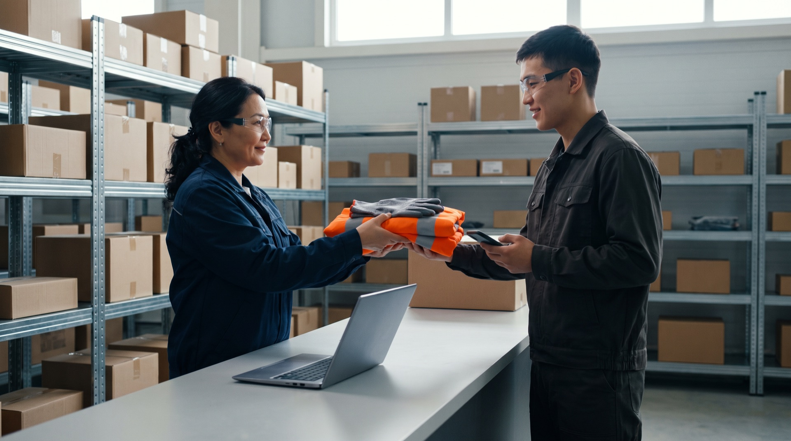
Ключевые кадры — референсы настроения. Финальные кадры строятся по утверждённой раскадровке.
Кадр. Логотип Treagra Safety собирается на фоне утренней промышленной площадки и уходит в угол кадра.
Без текста — звук и музыка
ТитрTreagra Safety
Кадр. Рассвет над промышленной площадкой Алматы, горы на горизонте. Сотрудники идут через проходную на смену, среди них — монтажник Асхат.
Если вы хоть раз были на складе спецодежды перед началом смены, вы знаете эту картину.
Кадр. Очередь у окна выдачи. Кладовщик одновременно ищет коробку с размером и заполняет ведомость. Асхат смотрит на часы.
Очередь у окна. Кладовщик ищет нужный размер и одновременно заполняет ведомость. А на объекте людей ждут, пока они стоят в очереди за СИЗ.
Кадр. Общий план цеха, смена начинается. На стоп-кадре появляется вопрос титром.
Каждому нужна своя защита: каска, очки, перчатки, обувь, спецодежда нужного размера. Сколько средств, времени и ресурсов уходит на то, чтобы всё это работало каждый день?
ТитрСколько это стоит предприятию?
Кадр. Быстрая смена планов: специалист охраны труда с распечаткой норм, снабженец с заявками, начальник цеха у линии, финансист и руководитель с отчётом.
За этим стоит ежедневная работа сразу нескольких отделов. Склад выдаёт, охрана труда следит за нормами, снабжение закупает, производство ждёт людей на смену, финансы и руководство отвечают за бюджет.
Кадр. Папка «Личные карточки учёта СИЗ», рука перелистывает заполненные от руки бланки.
И почти везде эта работа упирается в одни и те же задачи. Учёт ведётся на бумаге и в таблицах.
ТитрБумажный учёт
Кадр. Две заявки на одну позицию от разных участков — с разным количеством. Рядом распечатка приказа о нормах.
Нормы разбросаны по приказам и таблицам, и единого правила выдачи нет.
ТитрВыдача без правил
Кадр. Настенный календарь с пометками ручкой. Пустая ячейка на стеллаже.
Сроки замены отслеживают вручную, и нужного размера к сроку не всегда хватает на складе.
ТитрСроки и размеры
Кадр. Стол руководителя: отчёты от разных отделов, ноутбук с несколькими таблицами.
А чтобы увидеть общую картину, данные приходится собирать по отделам.
ТитрРазрозненные данные
Кадр. Склад с экипировкой: каски, перчатки и очки Jeta Safety, обувь Safety Jogger, спецодежда SIR Safety. Рядом с продукцией появляются логотипы брендов.
С 2018 года Treagra Safety обеспечивает предприятия Казахстана средствами защиты. Наш основной партнёр по СИЗ — Jeta Safety, спецобувь — Safety Jogger, спецодежда — SIR Safety.
ТитрTreagra Safety · с 2018 года
Экран. Главная страница платформы с баннером Jeta Safety «Защита рук каждый день».
Продукция партнёров есть и в самой платформе — например, экипировка Jeta Safety прямо на главной.
Кадр. Специалист Treagra за ноутбуком. Собирается логотип Treagra Safety.
Но поставки — лишь часть нашей работы. Для всех этих задач у нас есть собственная платформа учёта СИЗ и команда операционного сопровождения. Разберём каждую задачу по порядку.
Кадр. Крупно: стопка личных карточек, подписи разными ручками, исправленные размеры.
Задача первая — бумажный учёт. Личные карточки заполняются от руки, подписи собирают в ведомостях, а к проверке документы приходится искать по папкам.
Экран. Бумажная карточка «перетекает» в раздел «Сотрудники под контролем»: 340 сотрудников, фильтры по филиалам и подразделениям, кнопки «Импорт» и «Новый сотрудник».
В платформе все сотрудники собраны в одном разделе — по филиалам, подразделениям и статусам. Открываем карточку Асхата.
Экран. Карточка работника: «Асхат Нурланов · Монтажник · Таб. № ДЗ-0412 · Участок сборки · Смена дневная · Руководитель Е. Сеитов».
Здесь всё, что раньше было на бумаге: должность, участок, смена и руководитель.
ТитрКарточка работника
Экран. Вкладка «Размеры»: одежда 52–54, обувь 43, перчатки 10, головной убор 56–58.
Размеры Асхата хранятся в профиле, поэтому ошибиться при выдаче сложно.
Экран. История выдач: «Каска защитная, р. 56–58 · 14.10 · до 14.10.2028 · Подтверждено», «Перчатки с нитриловым покрытием, р. 10 · 28.10 · до 28.11 · Подтверждено».
Ниже — вся история выдач: что выдано, когда, какого размера и до какого срока.
Кадр. Окно выдачи. Асхат показывает QR-код на смартфоне, кладовщик сканирует. Появляется отметка «Подтверждено, 07:45».
Получение Асхат подтверждает онлайн — это и есть его подпись, только без бумаги. Запись сразу появляется в карточке.
ТитрОнлайн-подтверждение без бумаг
Экран. Блок «Статус подписи»: «Подписано · Кто подписал: Асхат Нурланов · Метод: QR · Когда: 28.10.2026, 07:45 · Данные не изменялись после подписи».
В карточке видно, кто подписал, когда и каким способом, и что после подписи данные не менялись. Такой документ можно спокойно показать на проверке.
Экран. Окно «Как получить или вернуть товары»: «По QR», «По лицу», «По карте / RFID», «По табельному номеру», «По ИИН», «По телефону».
Сотрудника система находит так, как удобно предприятию: по QR-коду, лицу, карте-пропуску, табельному номеру, ИИН или телефону.
Экран. Личный кабинет: отмеченные позиции и «Код выдачи: 418 205».
Можно и заранее: Асхат отмечает нужное в личном кабинете и получает код выдачи — кладовщику остаётся только собрать комплект.
Экран. Личная карточка учёта с колонкой «% износа по каждой позиции». Курсор нажимает «Распечатать карточку», принтер выдаёт заполненный бланк.
В личной карточке учёта по каждой позиции виден и процент износа. А если проверяющему нужна бумажная форма, карточка печатается в один клик — уже заполненной.
Кадр. Склад: кладовщик сверяет две заявки с разным количеством, рядом распечатка приказа.
Задача вторая — выдача без единых правил. Когда нормы хранятся в приказах и разных таблицах, где-то выдают лишнее, а кому-то не хватает положенного, и проследить расход сложно.
Экран. «Матрица норм · Монтажник»: каска — 1 шт / 24 мес, очки — 1 шт / 3 мес, перчатки — 1 пара / 1 мес, ботинки — 1 пара / 12 мес.
В нашей платформе за это отвечает матрица норм. Для каждой должности задан положенный комплект, количество и срок службы — по нормам законодательства Республики Казахстан или по внутренним стандартам вашего предприятия.
ТитрМатрица норм · по законодательству РК или стандартам предприятия
Экран. Карточка нормы: «Перчатки с нитриловым покрытием · 1 пара · 1 месяц · любой сезон · вредный фактор / условия: механические воздействия», отметки «Обязательный СИЗ», «Можно сдать в стирку».
У каждой нормы свои параметры: сезонность, условия труда, обязательная ли это позиция и можно ли сдавать её в стирку.
Экран. Повторная выдача перчаток Асхату в тот же день — сообщение «Ранняя замена требует отдельного решения».
При каждой выдаче система сама сверяется с нормой. Выдать больше положенного или раньше срока без разрешения ответственного нельзя.
Экран. Раздел «Блокировки выдачи»: счётчики и причины — «Количество превышает норму выдачи», «Ранняя замена», «У сотрудника есть несданный такой СИЗ», «Открытый критичный риск блокирует выдачу по норме»; переключатель «Разрешить выдачу», срок разрешения «8 ч.».
Все такие случаи собраны в разделе блокировок, с причиной по каждому. Выдачу останавливает и открытый критичный риск. Если основание есть, ответственный разрешает выдачу одним действием и на заданный срок.
Экран. Выдача с причиной «Утеря» и комментарием кладовщика.
Если выдача нужна вне графика — например, при утере, — она проходит с отметкой причины.
Экран. Счётчики матрицы норм: «Всего норм», «С рисками», «Заблокировано»; рядом — списания и причины замен по отделам.
А теперь то, что на бумаге почти не видно. На одном участке за перчатками приходят чаще положенного, на другом одну пару носят месяцами. Система фиксирует и то и другое и показывает такие отклонения по отделам и сотрудникам, и разобраться в причине можно сразу, а не в конце года.
ТитрОтклонения видны сразу
Кадр. Коробки с новой обувью на складе. Рядом — специалист в офисной одежде и защитной обуви проходит через цех.
Экран. Норма «Ботинки — офисные сотрудники» с увеличенным сроком службы.
Нормы помогают и экономить. Часто новые ботинки закупают каждый год для всех подряд — даже для тех, кто бывает в цехе редко. В матрице норм такой должности можно задать одну пару на несколько лет, если это допускают ваши нормы и условия труда, и эти деньги останутся в бюджете.
ТитрНорма под реальную работу
Экран. «Реестр рисков»: «Не получено — 3», сотрудники, у которых защита на исходе.
А реестр рисков показывает обратную сторону: у кого защита на исходе или положенное ещё не выдано — чтобы закрыть вопрос заранее.
Кадр. Настенный календарь с зачёркнутыми датами. Кладовщик ищет коробку с нужным размером — ячейка пустая.
Задача третья — сроки замены и размеры. Когда сроки считают вручную, замену легко пропустить, а подходящего размера в нужный день может не оказаться на складе.
Экран. «Календарь автозамен»: «Просрочено — 3», «Ближайшие 30 дней — 400», «Всего задач — 1 260»; фильтры по филиалу и статусу.
В нашей платформе сроки считает календарь автозамен — по каждой позиции и каждому сотруднику. Сразу видно, что уже просрочено и что понадобится в ближайшие тридцать дней.
ТитрКалендарь автозамен · просрочки
Экран. Строки с обратным отсчётом: «Омаров Р. · Ботинки · Просрочено», «Сапарова Е. · Костюм утеплённый · 4 дн.», «Ким Д. · Очки · 16 дн.», рядом остаток нужного размера на складе.
Напротив каждой замены — обратный отсчёт и остаток нужного размера. Исполнители заранее знают, кому и что выдавать.
Кадр. Асхат открывает личный кабинет в браузере телефона: напоминание «Очки открытые — замена 15.11».
Сам Асхат тоже заранее видит напоминание о своей замене.
Экран. «Минимальные остатки»: «Термобельё, р. 54 — остаток 8, минимум 10 · Ниже порога»; рядом в разделе «Снабжение» — заявка на пополнение «Создано автоматически».
Когда остаток какого-то размера опускается ниже минимума, снабжение сразу получает уведомление — в системе и на почту, — а заявка на пополнение уже создана. Её остаётся подтвердить.
Кадр. Три сотрудника из разных отделов отправляют руководителю свои таблицы — у каждой свой формат.
Задача четвёртая — разрозненные данные. У склада, охраны труда, снабжения и финансов свои таблицы, и общую картину приходится собирать вручную.
Кадр. Дальний стеллаж: нестандартные размеры, форма сотрудников, которые проработали пару месяцев и ушли.
А пока общей картины нет, деньги незаметно лежат на полках: нестандартные размеры, форма ушедших сотрудников, запасы, которые годами ждут своего часа.
Экран. Главный дашборд «Демо-завод»: «340 сотрудников · 1 260 СИЗ в эксплуатации · 12 выдано сегодня · Обеспеченность 94% · 400 замен в ближайшие 30 дней».
В нашей платформе вся картина — на дашбордах, онлайн: сколько сотрудников, сколько СИЗ в эксплуатации, какая обеспеченность и сколько замен впереди.
ТитрДашборды · онлайн-аналитика
Экран. Обеспеченность по подразделениям, прогноз замен, списания и их причины.
Обеспеченность видна по каждому подразделению, рядом — прогноз замен, списания и их причины.
Экран. Дашборд кладовщика «Мой склад сегодня»: «К выдаче сегодня — 15», «Заявки сотрудников — 4», «Ниже минимума — 2», «Просрочено — 3».
Свой дашборд есть и у исполнителей. Кладовщик с утра видит, сколько выдач впереди, какие заявки ждут и каких размеров не хватает.
Экран. «Расчёт бюджета»: 48,6 млн ₸ на год по месяцам; «Выдачи СИЗ», «Уже в снабжении», «Нужно докупить».
Бюджет на СИЗ рассчитывается вперёд на выбранный период, например на год, в тенге — по нормам и ценам, а рядом видно, сколько пойдёт на выдачи, что уже в снабжении и что нужно докупить.
Экран. «Прогноз и план»: «В следующем месяце — 3,9 млн ₸», горизонт закупа по месяцам, структура прогноза.
Видно и ближайшее: сколько понадобится в следующем месяце, как закупки распределятся по месяцам и из чего складывается прогноз.
Экран. «Центр отчётов»: плитки «Выдано СИЗ», «Ниже минимума», «Снабжение открыто», «Прогноз бюджета», «Дефекты и рекламации»; ниже графики. Затем кнопка «Печать» с сохранением в PDF; в списке — кнопка «Excel».
В центре отчётов собраны ключевые цифры: выдачи, позиции ниже минимума, заявки снабжения, прогноз бюджета, дефекты и рекламации поставщику. Отчёт можно распечатать или сохранить в PDF, а списки выгрузить в Excel.
Кадр. Одна и та же платформа на ноутбуке и на смартфоне рядом.
Работать в платформе просто. Она открывается в браузере, с компьютера или телефона, без установки программ, и работает в нашем облаке или на серверах вашего предприятия.
Кадр. Перетаскивание Excel-файла с сотрудниками и нормами, таблицы заполняются.
Сотрудников, нормы и номенклатуру можно загрузить из Excel за пару минут. При первом входе система сама подсказывает следующие шаги.
Экран. «Филиалы», «Склады компании» и справочник «Типы СИЗ»: несколько площадок, у каждой свой склад.
Если у предприятия несколько площадок, у каждой свой склад, а все данные сходятся в одной системе.
Экран. «Склад СИЗ под контролем»: позиции, количество по размерам, стоимость, баннер Jeta Safety; кнопки «Оформить приход» и «Импорт прихода».
На складе видно всё: позиции, количество по размерам и стоимость. Приход оформляется прямо в системе или загружается файлом.
Экран. Карточка товара с QR-кодом на бирке; при выдаче кладовщик сканирует метку — «Метка товара считана».
У каждой позиции своя карточка с QR-кодом. При выдаче кладовщик сканирует метку на бирке, и перепутать модель или размер сложно.
Экран. Разделы «Перемещение», «Инвентаризация» и «Списание» с выбором причины.
Перемещение между складами, инвентаризация и списание испорченных СИЗ тоже оформляются в системе — с причиной и историей каждой операции.
Экран. Разные стартовые экраны: руководитель, охрана труда, снабжение, склад, сотрудник.
Каждый пользователь работает в своей роли и видит только то, что нужно для его работы. А для крупных предприятий доступна интеграция с учётными системами.
ТитрБраузер · облако или ваши серверы · импорт из Excel · роли
Кадр. Асхат в начале смены открывает личный кабинет на смартфоне.
Экран. «Доброе утро, Асхат!», кнопка «Отметиться — начать работу».
У каждого сотрудника есть личный кабинет. Асхат отмечает в нём начало и конец смены — так ведётся табель учёта рабочего времени.
Экран. «Мои выдачи СИЗ» с датами «Заменить до» и вкладка «Мои нормы»: что положено и на какой срок.
Здесь он видит, что ему выдано, когда положена следующая замена и какие нормы установлены для его должности, — и ему не нужно уточнять это у мастера или на складе.
Экран. Кнопки «Получить», «Вернуть», «Заменить размер», «Химчистка». Нажатие «Заменить размер» — заявка создана.
Отсюда же Асхат сам подаёт заявку: получить СИЗ, вернуть, заменить размер или сдать спецодежду в химчистку.
Экран. Раздел склада «Заявки на замену размера»: новые, в работе, выполнено.
Склад видит такую заявку в отдельном разделе — со статусом: новая, в работе, выполнена.
Экран. «Инструктажи под контролем»: даты проведения и сроки следующих инструктажей.
Для службы охраны труда в платформе ведутся инструктажи — с напоминаниями о сроках.
Экран. «Медосмотры под контролем»: кому пройти, просрочено, годен, документы загружены.
Медосмотры — с понятными статусами и прикреплёнными документами.
Кадр. Специалист ОТ на обходе цеха фотографирует на телефон перчатки с повреждением.
Экран. «Критичные СИЗ»: позиция на контроле, фото, комментарий.
Под отдельным контролем — критичные СИЗ. Замечания по качеству и рекламации фиксируются прямо с телефона, с фото, и сразу попадают в аналитику.
ТитрИнструктажи · медосмотры · критичные СИЗ
Экран. «Инциденты и потенциально опасные случаи»: регистрация события.
В платформе регистрируются и производственные инциденты, и потенциально опасные случаи — вся история охраны труда в одной системе.
Кадр. Проверяющий сам листает на планшете электронные карточки и сверяет их со своим списком. Специалист ОТ спокойно стоит рядом.
А когда приходит проверка, пакет документов — личные карточки и отчёты — собирается без поиска по папкам.
Кадр. Специалист Treagra у ноутбука звонит закупщику предприятия; на экране позиция «Ниже порога».
За платформой стоят люди. За вашим предприятием закрепляется специалист Treagra. Мы можем сами завести электронные карточки работников, сформировать и скорректировать матрицы норм. Специалист ведёт данные, согласует заявки и сам предупредит снабжение, когда какой-то размер на исходе.
ТитрЗакреплённый специалист
Кадр. Он же рядом с кладовщиком предприятия на выдаче, вместе сверяют список.
При необходимости он работает вместе с вашим кладовщиком — прямо на складе.
Кадр. Инженер поддержки Treagra на видеосвязи с кладовщиком предприятия; на втором мониторе — состояние серверов.
А за стабильную работу платформы и серверов отвечает наша IT-команда: обновления, поддержка и помощь пользователям.
ТитрIT-поддержка
Кадр. Асхат в личном кабинете нажимает «Химчистка». Мешок со спецодеждой уходит на стирку.
Мы также организуем стирку, химчистку и мелкий ремонт спецодежды — от заявки в личном кабинете до чистого комплекта на полке.
Кадр. Чистый упакованный комплект возвращается на склад. Вешалка с арендной спецодеждой.
Если предприятию удобнее брать спецодежду в аренду, предложим и такой формат. А если на складе скопились остатки, которые уже не нужны, обсудим их выкуп.
ТитрСтирка · химчистка · аренда спецодежды
Кадр. Переговорная: представители Treagra и предприятия обсуждают схему.
У каждого предприятия своя структура и свои процессы. Поэтому формат работы мы определяем вместе с вами.
Кадр. Инфографика: четыре карточки одинакового размера появляются по очереди.
Можно оставить свой склад и людей и работать в нашей платформе. Можно организовать выдачу через пункт Treagra. Можно передать нам только те задачи, которые отнимают больше всего времени. Или поручить нам обеспечение СИЗ целиком.
ТитрСвой склад + платформа · Пункт выдачи Treagra · Частичное сопровождение · Полное обеспечение
Кадр. Брендированный пункт выдачи Treagra на предприятии: логотип на входе, сотрудник в фирменной форме у стойки.
Пункт выдачи Treagra — это наша команда прямо на вашей площадке.
Кадр. Специалист Treagra и руководитель снабжения выбирают экипировку: каталоги брендов, образцы на столе.
Мы не навязываем свой ассортимент и не привязываем вас к одной форме. Экипировку подбираем под условия вашего производства, а условия любого формата согласуем так, чтобы они были выгодны обеим сторонам.
ТитрФормат и ассортимент — под вас
Кадр. Руководитель и специалист Treagra за столом с одним общим планом.
Зачем передавать обеспечение СИЗ на аутсорсинг? Потому что весь цикл — от экипировки до отчёта — ведёт одна команда и за него отвечает один партнёр.
ТитрОдин партнёр на весь цикл
Кадр. Специалист охраны труда занимается обходом цеха, а не таблицами.
Ваши специалисты освобождаются от рутины и занимаются своей работой.
ТитрШтат освобождён от рутины
Кадр. Асхат получает комплект и уходит в цех.
Каждый сотрудник получает защиту вовремя и нужного размера.
ТитрЗащита вовремя
Кадр. Финансовый директор и руководитель перед совещанием сравнивают на экране прогноз и план.
Расходы на СИЗ прозрачны: видно, сколько и на что уходит, а выдача идёт строго по нормам — без неучтённого перерасхода.
ТитрПрозрачные расходы
Кадр. Чистый комплект после стирки снова выдаётся сотруднику.
Повторная выдача после стирки помогает обойтись без лишних закупок, а деньги не лежат на складе в ненужных остатках.
ТитрМеньше лишних остатков
Кадр. Кладовщик и специалист ОТ спокойно работают, без бумаг.
У кладовщиков и охраны труда меньше ручной работы, а документы к проверке всегда готовы.
ТитрМеньше ручной работы
Кадр. Снабженец оформляет заказ заранее по прогнозу.
Закупки и бюджет на СИЗ планируются заранее. Точный эффект мы рассчитаем вместе с вами, на данных вашего предприятия.
ТитрПланируемый бюджет
Кадр. Рукопожатие представителей Treagra и предприятия.
Treagra Safety — не просто поставщик, а партнёр: от экипировки и учёта до операционного сопровождения.
Кадр. Финальный экран: логотип Treagra Safety, ниже логотипы Jeta Safety, Safety Jogger, SIR Safety, сайт и телефон.
Начать можно с одного участка: настроим систему и покажем результат на ваших данных. Свяжитесь с нами — подберём формат для вашего предприятия.
ТитрTreagra Safety · Запуск на одном участке · [сайт] · [телефон]
Treagra Safety — не просто платформа учёта СИЗ, а партнёр, который выстраивает обеспечение вместе с вами.
Обычный рабочий день и трудности каждого участника процесса — а затем реальный рабочий процесс в платформе Treagra: от первого входа до отчётов, каждый раздел отвечает на вопрос, который возникает в работе. Ключевой момент — выдача СИЗ, показанная шаг за шагом. В конце — команда, сервис, гибкие форматы и выгоды.
Рабочий день → трудности участников → Treagra и партнёры → вход и быстрый старт → главная → сотрудники и карточка работника → матрица норм и блокировки → выдача шаг за шагом → календарь автозамен → склад, остатки и снабжение → личный кабинет → охрана труда → дашборды, бюджет и отчёты → команда и сервис → гибкий формат → зачем СИЗ на аутсорсинг и что получает предприятие → с чего начать → финал.
Вступление — живые сцены. Основная часть — интерфейс платформы крупно, с плавными переходами между разделами меню, подсветкой элементов и подписями. Между разделами — короткие живые вставки со склада и из офиса.
Ровная современная музыка продуктовой презентации, негромкие звуки интерфейса на нажатиях. Плавные переходы по меню: курсор ведёт зрителя от раздела к разделу без резких склеек.
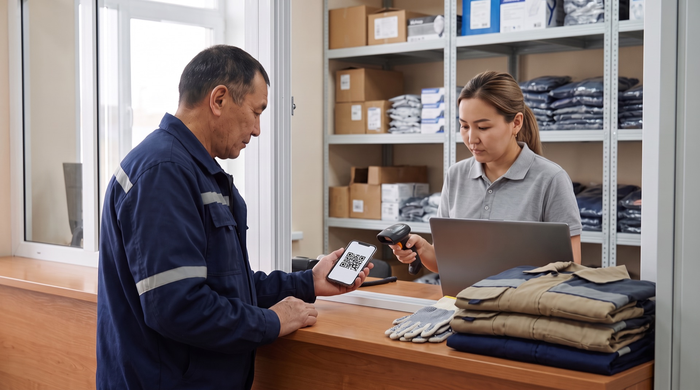
Ключевые кадры — референсы настроения. Финальные кадры строятся по утверждённой раскадровке.
Кадр. Логотип Treagra Safety на фоне утренней промышленной площадки Алматы, горы на горизонте, затем крупно — пара перчаток на стойке выдачи.
Одна пара перчаток. Кому она положена? Кто и когда её получил? Когда её менять? И сколько таких выдач у предприятия за год?
ТитрСколько решений стоит за одной выдачей?
Кадр. Сотрудники идут на смену, общий план склада.
Обеспечение средствами защиты — это десятки ежедневных операций: планирование, закупка, хранение, выдача и учёт.
Кадр. Быстрая смена планов: кладовщик ищет размер на стеллаже; специалист ОТ сверяет распечатку норм; снабженец принимает срочную заявку; сотрудник у окна выдачи спрашивает о замене; начальник цеха смотрит на часы; финансист сверяет расходы; руководитель сводит отчёты.
Когда всё это ведётся на бумаге и в разных таблицах, у каждого участника — свои трудности. Кладовщик ищет нужный размер. Охрана труда вручную сверяет нормы и сроки. Снабжение получает срочные заявки. Сотрудник не знает, когда ему положена замена. Начальник цеха ждёт людей на смену. Финансы сверяют расходы. А сводные цифры приходится собирать по отделам.
ТитрСклад · Охрана труда · Снабжение · Сотрудник · Производство · Финансы · Руководство
Кадр. Склад с продукцией партнёров, логотипы Jeta Safety, Safety Jogger, SIR Safety.
С 2018 года Treagra Safety обеспечивает предприятия средствами защиты брендов Jeta Safety, Safety Jogger и SIR Safety.
Кадр. Логотип Treagra Safety, ноутбук с платформой, рядом специалист Treagra.
Но мы не просто поставщик. Чтобы решить эти задачи, у нас есть собственная платформа учёта СИЗ и команда сопровождения. Давайте посмотрим, как устроена платформа.
Кадр. Вход в платформу с ноутбука, затем с телефона.
Открываем платформу. Она работает в браузере — с компьютера или телефона, без установки программ — в облаке Treagra или на серверах вашего предприятия.
Экран. Пошаговая подсказка при первом входе: «Шаг 1 из 4».
При первом входе система сама проводит по шагам.
Кадр. Загрузка Excel-файла с сотрудниками, нормами и номенклатурой.
Загружаем сотрудников, нормы и номенклатуру из Excel — это занимает пару минут. Для крупных предприятий доступна интеграция с учётными системами.
ТитрБраузер · облако или ваши серверы · импорт из Excel
Экран. Стартовые экраны разных ролей.
Каждый пользователь работает в своей роли: руководитель видит общую картину, охрана труда — нормы и сроки, снабжение — остатки и закупки, кладовщик — выдачу, сотрудник — свой личный кабинет.
Экран. Главная: «Добрый день!», баннер Jeta Safety «Защита рук каждый день», ниже плитки «340 сотрудников · 1 260 СИЗ в эксплуатации · 1 040 истекает в течение года · 2 140 единиц на складе · 12 выдано сегодня».
Что происходит на предприятии прямо сейчас? Это видно на главной. Здесь — продукция наших партнёров и ключевые показатели предприятия: сотрудники, СИЗ в эксплуатации, что истекает в течение года, остатки на складе и выдачи за сегодня.
Экран. Ниже — блоки «Обеспеченность 94%», «Замены в ближайшие 30 дней — 400», «Критичные СИЗ на контроле — 9».
Сразу под ними — обеспеченность, ближайшие замены и критичные позиции. Главное видно с первого взгляда.
Экран. Раздел «Сотрудники под контролем» с баннером Jeta Safety: список с фильтрами по филиалам и подразделениям, кнопки «Импорт», «Excel», «Новый сотрудник».
Кто работает на предприятии и где? Ответ в разделе «Сотрудники». Здесь все работники предприятия — с филиалами, подразделениями и статусами.
Экран. Карточка работника: должность, подразделение, смена, руководитель; вкладка «Размеры».
Открываем карточку работника. Должность, подразделение, смена, руководитель, а на отдельной вкладке — размеры, от одежды до перчаток.
ТитрКарточка работника
Экран. История выдач с отметками «Подтверждено».
Ниже — вся история выдач. Каждая подтверждена онлайн, без бумажной подписи.
Экран. Блок «Статус подписи»: «Подписано · Кто подписал: Асхат Нурланов · Метод: QR · 07:45 · Данные не изменялись после подписи».
Какой документ подписан, кем, когда и каким способом, видно прямо в карточке. Здесь же система показывает, что после подписи данные не менялись.
Экран. Личная карточка учёта с колонкой «% износа», кнопка «Распечатать карточку».
Открываем личную карточку учёта: она формируется автоматически, с процентом износа по каждой позиции, и печатается в один клик.
Экран. «Матрица норм» по должностям.
Что положено этому сотруднику? Ответ в матрице норм. Для каждой должности здесь задан положенный комплект — по нормам законодательства Республики Казахстан или стандартам предприятия.
ТитрМатрица норм
Экран. Карточка нормы: вид СИЗ, количество, срок службы, сезонность, вредный фактор / условия, отметки «Обязательный СИЗ», «Можно сдать в стирку».
Открываем карточку нормы: вид СИЗ, количество, срок службы, сезонность и условия труда. Сверять нормы вручную больше не нужно — при каждой выдаче система делает это сама.
Экран. Раздел «Блокировки выдачи»: счётчики, причины, переключатель «Разрешить выдачу».
Рядом — раздел блокировок. Здесь видно, где выдача остановлена и почему, и ответственный может разрешить её, если основание есть.
Экран. Счётчики матрицы норм: «Всего норм», «С рисками», «Заблокировано»; причины замен и списаний по отделам.
Смотрим счётчики матрицы и причины замен. Здесь видны отклонения: где за перчатками приходят чаще положенного, а где одну пару носят месяцами.
Экран. Норма «Ботинки — офисные сотрудники» с увеличенным сроком службы.
Здесь же норму можно настроить под реальную работу. Например, для должностей, которые редко бывают в цехе, задать одну пару ботинок на несколько лет вместо ежегодной закупки, если это допускают ваши нормы и условия труда.
Экран. «Реестр рисков»: «Не получено — 3», защита на исходе.
А в реестре рисков — те, у кого защита на исходе или положенное ещё не выдано.
Кадр. Сотрудник подходит к окну выдачи и показывает QR-код на смартфоне.
А теперь посмотрим, как выглядит выдача. Сотрудник подходит к окну и показывает свой QR-код.
Экран. Окно способов: «По QR», «По лицу», «По карте / RFID», «По табельному номеру», «По ИИН», «По телефону».
Вместо QR можно использовать распознавание лица, карту-пропуск, табельный номер, ИИН или телефон — предприятие выбирает удобные способы.
Экран. Система находит сотрудника: положенный сегодня комплект и наличие нужного размера на складе.
Система сразу находит сотрудника и показывает кладовщику, что положено выдать именно сейчас и есть ли нужный размер.
Экран. Попытка выдать лишнюю пару — сообщение «Количество превышает норму выдачи».
Если выдача выходит за норму, система её не пропустит без разрешения ответственного.
Кадр. Сотрудник подтверждает получение, на экране «Подтверждено». Запись появляется в карточке.
Сотрудник подтверждает получение онлайн — и запись сразу появляется в его карточке. Без ведомостей, без бумажных подписей, меньше чем за минуту.
ТитрВыдача меньше чем за минуту
Экран. Выдача с причиной «Утеря».
Если нужна выдача вне графика — например, при утере, — она проходит с отметкой причины и видна в отчётах.
Экран. Личный кабинет: отмеченные позиции и «Код выдачи: 418 205».
А можно ещё быстрее: сотрудник заранее отмечает нужное в личном кабинете и получает код выдачи — кладовщику остаётся собрать комплект.
Экран. «Календарь автозамен»: «Просрочено — 3», «Ближайшие 30 дней — 400», «Всего задач — 1 260».
Кому сегодня пора менять СИЗ? Это видно в календаре автозамен. Сроки замены система считает сама — по каждой позиции и каждому сотруднику.
ТитрКалендарь автозамен · просрочки
Экран. Строки: «Омаров Р. · Ботинки · Просрочено», «Сапарова Е. · Костюм утеплённый · 4 дн.», «Ким Д. · Очки · 16 дн.», с остатком нужного размера на складе.
Календарь показывает, что уже просрочено, что понадобится в ближайшие тридцать дней и сколько нужного размера осталось на складе.
Экран. Фильтры «Филиал» и «Статус».
Его можно отфильтровать по филиалу и статусу — каждый исполнитель видит свой участок.
Кадр. Сотрудник открывает личный кабинет в браузере телефона: напоминание «Очки открытые — замена 15.11».
А сотрудник заранее получает напоминание о своей замене.
Экран. «Склад СИЗ под контролем» с баннером Jeta Safety: позиции по категориям и размерам, стоимость, кнопки «Оформить приход» и «Импорт прихода».
Хватит ли того, что есть на складе? Смотрим раздел «Склад». Здесь все остатки — по категориям и размерам, со стоимостью. Приход оформляется прямо в системе или загружается файлом.
Экран. Карточка товара с QR-кодом на бирке, сканирование метки — «Метка товара считана».
Открываем карточку товара: у каждой позиции свой QR-код. На выдаче кладовщик сканирует метку, и система сверяет модель и размер.
Экран. Вкладки «Перемещение», «Инвентаризация», «Списание».
Здесь же — перемещение между складами, инвентаризация и списание испорченных СИЗ с указанием причины.
Экран. «Филиалы», «Склады компании», справочник «Типы СИЗ».
Если площадок несколько, у каждой свой склад, а данные сходятся в одной системе.
Экран. «Минимальные остатки»: правило «минимум 10», позиция «Термобельё, р. 54 — остаток 8 · Ниже порога»; в разделе «Снабжение» — заявка «Создано автоматически».
Для каждой позиции задаётся минимальный остаток. Как только он нарушен, ответственный получает уведомление — в системе и на почту, — а заявка на пополнение создаётся автоматически.
Кадр. Сотрудник в начале смены со смартфоном.
Экран. «Доброе утро, Асхат!», кнопка «Отметиться — начать работу».
А что видит сам сотрудник? В личном кабинете он отмечает начало и конец смены, так ведётся табель.
Экран. «Мои выдачи СИЗ», «Заменить до», вкладка «Мои нормы».
Здесь он видит, что ему выдано, когда положена замена и какие нормы действуют для его должности.
Экран. Кнопки «Получить», «Вернуть», «Заменить размер», «Химчистка»; затем на стороне склада — раздел «Заявки на замену размера» со статусами.
Нажимаем нужную кнопку — и заявка готова: получить, вернуть, заменить размер или сдать спецодежду в химчистку. Склад видит её со статусом — новая, в работе, выполнена.
ТитрЛичный кабинет
Экран. «Инструктажи» и «Медосмотры под контролем» со сроками и статусами.
Кому пора на инструктаж или медосмотр? Это видно в разделе охраны труда. Инструктажи и медосмотры ведутся с напоминаниями о сроках и понятными статусами.
Кадр. Специалист ОТ на обходе фотографирует повреждённые перчатки.
Экран. «Критичные СИЗ»: фото, комментарий, статус «На контроле».
Критичные СИЗ — под отдельным контролем. Замечания и рекламации фиксируются с телефона, с фото, и попадают в аналитику.
Экран. «Инциденты и потенциально опасные случаи».
Здесь же регистрируются инциденты и потенциально опасные случаи.
ТитрИнструктажи · медосмотры · критичные СИЗ · инциденты
Экран. Дашборды: обеспеченность по подразделениям, прогноз замен, списания и их причины.
Как всё это выглядит в целом? Дашборды показывают обеспеченность по подразделениям, прогноз замен, списания и их причины — онлайн.
ТитрДашборды
Экран. Дашборд кладовщика «Мой склад сегодня»: «К выдаче сегодня — 15», «Заявки сотрудников — 4», «Ниже минимума — 2», «Просрочено — 3».
Свои дашборды есть и у исполнителей: кладовщик с утра видит выдачи, заявки и нехватку размеров.
Экран. «Расчёт бюджета»: 48,6 млн ₸ на год; «Выдачи СИЗ», «Уже в снабжении», «Нужно докупить»; «В следующем месяце — 3,9 млн ₸», горизонт закупа, структура прогноза.
Сколько это будет стоить и когда платить? Ответ в модуле бюджета. Он рассчитывает затраты на СИЗ вперёд на выбранный период, например на год, в тенге, по нормам и ценам. Видно, сколько пойдёт на выдачи, что в снабжении и что нужно докупить. Видно и следующий месяц, и из чего складывается прогноз.
Экран. «Склад»: остатки по позициям с ценой.
А на складе видно, что и по какой цене лежит на полках. Это важно: деньги часто незаметно лежат в нестандартных размерах, форме ушедших сотрудников и запасах, которые годами ждут своего часа.
Экран. «Центр отчётов», ниже графики; кнопка «Печать» с сохранением в PDF; в списке — кнопка «Excel».
В центре отчётов — выдачи, позиции ниже минимума, заявки снабжения, прогноз бюджета, дефекты и рекламации. Отчёт можно распечатать или сохранить в PDF, списки выгрузить в Excel, а пакет документов для проверки собирается без поиска по папкам.
Кадр. Специалист Treagra звонит закупщику предприятия, затем работает рядом с кладовщиком.
Платформой можно пользоваться самостоятельно или вместе с командой Treagra. Мы можем сами завести карточки и настроить нормы. За предприятием закрепляется специалист: он ведёт данные и заявки, работает вместе с кладовщиком и заранее предупреждает снабжение, когда размер на исходе.
ТитрЗакреплённый специалист
Кадр. Инженер поддержки Treagra на видеосвязи с кладовщиком; на втором мониторе — состояние серверов.
IT-команда Treagra отвечает за стабильную работу платформы, обновления и помощь пользователям.
Кадр. Мешок со спецодеждой уходит на стирку и возвращается чистым комплектом. Вешалка с арендной спецодеждой.
Мы организуем стирку, химчистку и мелкий ремонт спецодежды — от заявки в личном кабинете до чистого комплекта на полке. Предлагаем аренду спецодежды, а ненужные остатки со склада можем выкупить.
ТитрСтирка · химчистка · аренда
Кадр. Переговорная, представители Treagra и предприятия.
Формат работы гибкий: у каждого предприятия своя структура, поэтому формат мы определяем вместе с вами.
Кадр. Инфографика: четыре формата одинакового размера. Затем брендированный пункт выдачи Treagra.
Можно оставить свой склад и людей и работать в нашей платформе. Можно организовать выдачу через пункт Treagra, передать нам отдельные задачи или обеспечение СИЗ целиком. Свой ассортимент не навязываем и не привязываем к одной форме: экипировку подбираем под ваше производство. Условия согласуем так, чтобы они устраивали и вас, и нас.
ТитрСвой склад + платформа · Пункт выдачи Treagra · Частичное сопровождение · Полное обеспечение
Кадр. Руководитель и специалист Treagra за столом с одним общим планом работ.
Зачем передавать обеспечение СИЗ на аутсорсинг? Весь цикл, от экипировки до отчёта, ведёт одна команда, и за него отвечает один партнёр.
ТитрОдин партнёр на весь цикл
Кадр. Специалист ОТ на обходе цеха, кладовщик спокойно работает за стойкой.
Ваши специалисты освобождаются от рутины и занимаются своей работой, а экипировку мы подбираем под ваше производство.
ТитрШтат освобождён от рутины
Кадр. Сотрудник получает комплект и уходит в цех.
Что ещё это даёт предприятию? Защиту вовремя и нужного размера для каждого сотрудника.
ТитрЗащита вовремя
Кадр. Руководитель на совещании выводит дашборд на большой экран.
Прозрачные расходы и выдачу строго по нормам.
ТитрПрозрачные расходы
Кадр. Чистый комплект после стирки снова на полке.
Повторную выдачу после стирки вместо лишних закупок. И меньше денег, которые просто лежат на складе.
ТитрМеньше лишних закупок и остатков
Кадр. Кладовщик выдаёт комплект: QR-код, отметка на экране, сотрудник уходит. Очереди у окна нет.
Меньше ручной работы у кладовщиков и охраны труда.
ТитрМеньше ручной работы
Кадр. Снабженец оформляет заказ по прогнозу.
И бюджет на СИЗ, который планируется заранее. Сколько это даст именно вам, покажут ваши данные.
ТитрПланируемый бюджет
Кадр. Инфографика: четыре шага появляются по очереди, рядом — экран платформы на каждом шаге.
С чего начать? Сверяем ваши нормы. Загружаем их вместе с сотрудниками и номенклатурой. Настраиваем роли и склад. И запускаем систему на одном участке, чтобы вы увидели результат на реальных данных.
ТитрСверка норм → Загрузка данных → Роли и склад → Запуск на одном участке
Кадр. Руководитель открывает платформу на своём ноутбуке и сам нажимает на разделы, рядом специалист Treagra. Финальный экран: логотип Treagra Safety, партнёры, сайт и телефон.
Treagra Safety — не просто платформа учёта СИЗ, а партнёр, который выстраивает обеспечение вместе с вами. Запросите демонстрацию на примере вашего предприятия.
ТитрTreagra Safety · Запросить демонстрацию · [сайт] · [телефон]
Treagra Safety — одна система и один партнёр для всех, кто отвечает за обеспечение СИЗ.
В обеспечении СИЗ участвуют охрана труда, склад, снабжение, сотрудник, производство, финансы и руководство. Ролик проходит по каждому из них: какая у отдела задача, как с ней справляются сейчас и что даёт ему платформа Treagra. Каждая функция показана в сцене того отдела, которому она нужна. В конце — команда Treagra, сервис, гибкий формат работы и выгоды для каждого отдела.
Участники процесса → Treagra и платформа → охрана труда → склад → снабжение → сотрудник → производство → финансы → руководство → команда Treagra → стирка, химчистка и аренда → гибкий формат → зачем СИЗ на аутсорсинг и что получает каждый отдел → финал.
Для каждой роли — живая сцена на предприятии с подписью должности, затем экраны платформы, которые нужны именно этой роли. Единый деловой стиль.
Сдержанная музыка с единым пульсом, который проходит через все отделы и собирается в финале. Каждая роль начинается с подписи должности, каждая сцена — с нового места на предприятии.
Ключевые кадры — референсы настроения. Финальные кадры строятся по утверждённой раскадровке.
Кадр. Логотип Treagra Safety на фоне утренней промышленной площадки Алматы, горы на горизонте, затем сотрудники идут на смену.
Кто на вашем предприятии отвечает за средства защиты? Честный ответ — сразу несколько отделов. И каждому нужно своё.
ТитрКто отвечает за СИЗ?
Кадр. Короткие планы: специалист ОТ с журналом, кладовщик у стеллажа, снабженец с таблицей заявок, начальник цеха у линии, финансист с бюджетом, руководитель с отчётами. Под каждым — подпись роли.
Охрана труда отвечает за нормы, склад — за выдачу, снабжение — за закупки, производство — за то, чтобы смена не стояла, финансы — за бюджет, руководство — за общую картину. А сотруднику важно вовремя получить своё. Когда учёт ведётся на бумаге и в разных таблицах, каждый работает со своими данными, а общей картины нет.
ТитрОхрана труда · Склад · Снабжение · Сотрудник · Производство · Финансы · Руководство
Кадр. Склад с продукцией партнёров, логотипы Jeta Safety, Safety Jogger, SIR Safety.
Treagra Safety работает на этом рынке с 2018 года: средства защиты Jeta Safety, спецобувь Safety Jogger, спецодежда SIR Safety.
Экран. Главная страница платформы с баннером Jeta Safety и ключевыми показателями.
Продукция партнёров есть и в самой платформе — её видит каждый пользователь.
Кадр. Логотип Treagra Safety, платформа на ноутбуке и смартфоне.
Но мы не просто поставщик: у нас есть собственная платформа учёта и команда сопровождения. Платформа работает в браузере, с компьютера или телефона, в нашем облаке или на серверах предприятия.
Кадр. Загрузка Excel-файла — список заполняется в разделе «Сотрудники под контролем»: 340 сотрудников по филиалам и подразделениям. Затем экраны разных ролей.
Сотрудников, нормы и номенклатуру можно загрузить из Excel — все работники сразу появляются в одном разделе. При первом входе система сама подсказывает шаги, а для крупных предприятий доступна интеграция с учётными системами. Каждый отдел работает в своей роли и видит своё. Посмотрим, что платформа даёт каждому.
Кадр. Специалист ОТ сверяет распечатку норм с бумажным журналом. Подпись «Охрана труда».
Начнём с охраны труда. Ей нужно обеспечить каждого по нормам и в любой момент быть готовой к проверке. Обычно для этого нормы и сроки сверяют вручную, а журналы ведут на бумаге.
Экран. Матрица норм по должностям.
Платформа даёт ей матрицу норм: комплект для каждой должности — по нормам законодательства Республики Казахстан или стандартам предприятия.
ТитрМатрица норм
Экран. Карточка нормы: вид СИЗ, количество, срок службы, сезонность, вредный фактор / условия, отметки «Обязательный СИЗ», «Можно сдать в стирку».
В каждой норме — срок службы, сезонность, условия труда, обязательная ли позиция и можно ли сдавать её в стирку.
Экран. Раздел «Блокировки выдачи»: причины и переключатель «Разрешить выдачу».
Выдать сверх нормы или раньше срока без разрешения нельзя — все такие случаи охрана труда видит в разделе блокировок, с причиной по каждому.
Экран. Счётчики матрицы норм: «Всего норм», «С рисками», «Заблокировано»; причины замен и списаний по отделам.
По счётчикам матрицы охрана труда видит отклонения: на одном участке за перчатками приходят чаще положенного, на другом одну пару носят месяцами. Система фиксирует и то и другое. Почему — можно разобраться сразу, и при этом никто не останется без защиты.
Кадр. Специалист ОТ на участке спрашивает работника о перчатках: подходят ли они для его работы.
А когда видно, как СИЗ расходуются на самом деле, проще понять, подходит ли экипировка для конкретной работы, — ещё до того, как случится инцидент.
Экран. «Реестр рисков»: «Не получено — 3».
Реестр рисков показывает, у кого защита на исходе или положенное ещё не выдано.
Экран. «Календарь автозамен»: «Просрочено — 3» подсвечено, «Ближайшие 30 дней — 400», строки с обратным отсчётом.
Сроки замены охрана труда видит в календаре автозамен: что уже просрочено и кому замена понадобится в ближайшие тридцать дней.
ТитрКалендарь автозамен · просрочки
Экран. «Инструктажи под контролем», «Медосмотры под контролем».
Инструктажи и медосмотры ведутся здесь же — с напоминаниями о сроках и понятными статусами.
Кадр. Специалист ОТ на обходе фотографирует повреждённые перчатки.
Экран. «Критичные СИЗ»: фото, комментарий, статус «На контроле».
Критичные СИЗ — под отдельным контролем: замечания и рекламации фиксируются с телефона, с фото.
Экран. «Инциденты и потенциально опасные случаи».
В платформе регистрируются и инциденты, и потенциально опасные случаи.
Кадр. Проверяющий сам листает карточки на планшете. На экране кнопка «Распечатать карточку», специалист ОТ стоит рядом.
Пакет документов для проверяющего — личные карточки и отчёты — готов за пару минут.
Кадр. Кладовщик ищет коробку на стеллаже и заполняет ведомость. Подпись «Склад».
На складе важно быстро выдать нужное и правильно это оформить. Обычно кладовщик ищет размер на стеллажах и заполняет ведомость вручную.
Экран. «Склад СИЗ под контролем»: позиции по категориям и размерам, стоимость, кнопки «Оформить приход» и «Импорт прихода».
Платформа сразу показывает остатки — по каждой позиции и каждому размеру. Приход оформляется в системе или загружается файлом.
Экран. Карточка товара с QR-кодом на бирке, сканирование метки — «Метка товара считана».
У каждой позиции своя QR-метка: кладовщик сканирует её при выдаче, и перепутать модель или размер сложно.
Экран. Разделы «Перемещение», «Инвентаризация», «Списание».
Перемещения между складами, инвентаризацию и списание испорченных СИЗ склад тоже оформляет в системе — с причиной по каждой операции.
Экран. «Филиалы», «Склады компании», справочник «Типы СИЗ».
Если площадок несколько, у каждой свой склад, и все данные сходятся в одной системе.
Экран. Дашборд кладовщика «Мой склад сегодня»: «К выдаче сегодня — 15», «Заявки сотрудников — 4», «Ниже минимума — 2», «Просрочено — 3».
С утра у кладовщика свой дашборд: сколько выдач впереди, какие заявки ждут и каких размеров не хватает.
Экран. Окно способов: «По QR», «По лицу», «По карте / RFID», «По табельному номеру», «По ИИН», «По телефону». Затем — положенный комплект сотрудника и наличие размера.
На выдаче сотрудника находят по QR-коду, лицу, пропуску, табельному номеру, ИИН или телефону — и сразу видно, что ему положено и есть ли нужный размер.
Кадр. Сотрудник подтверждает получение QR-кодом — на экране «Подтверждено». Запись появляется в электронной карточке, вкладка «Размеры» — 52–54, 43, 10.
Получение сотрудник подтверждает онлайн, и запись тут же попадает в его карточку, где хранятся и его размеры. Без ведомостей и бумажных подписей.
ТитрКарточка работника · онлайн-подтверждение
Экран. Блок «Статус подписи»: «Подписано · Кто подписал: Асхат Нурланов · Метод: QR · 07:45 · Данные не изменялись после подписи».
В карточке остаётся и сама подпись: кто подписал, когда, каким способом и что данные после этого не менялись.
Экран. Личная карточка учёта с колонкой «% износа».
В личной карточке видно, что и когда выдано, и процент износа по каждой позиции.
Экран. Личный кабинет: «Код выдачи: 418 205».
Если сотрудник отметил нужное заранее в личном кабинете, кладовщику достаточно кода выдачи — комплект уже известен.
Экран. Выдача с причиной «Утеря».
А выдача вне графика, например при утере, проходит с отметкой причины.
Кадр. Снабженец принимает срочную заявку по телефону. Подпись «Снабжение».
Снабжению нужно закупить вовремя и без излишков. Без единой картины остатков приходится работать по срочным заявкам.
Экран. Календарь автозамен: «Ближайшие 30 дней — 400», разбивка по размерам; фильтры по филиалу и статусу.
Снабжению календарь автозамен показывает, что понадобится в ближайшие тридцать дней и в каких размерах, — по каждому филиалу.
ТитрКалендарь автозамен
Экран. «Минимальные остатки»: «Термобельё, р. 54 — остаток 8, минимум 10 · Ниже порога»; в разделе «Снабжение» — заявка «Создано автоматически».
Когда остаток падает ниже минимума, снабжение сразу получает уведомление — в системе и на почту, — а заявка на пополнение уже создана. Её остаётся подтвердить.
Экран. «Прогноз и план»: «Нужно докупить», «Уже в снабжении», «Выдачи СИЗ», горизонт закупа по месяцам.
А прогноз показывает, что нужно докупить, что уже в снабжении и как закупки распределятся по месяцам. Заявки становятся плановыми, а не срочными.
Кадр. Снабженец и специалист Treagra сверяют размерный ряд на складе.
Склад пополняется тем, что действительно понадобится, а нестандартные размеры не копятся на полках.
ТитрЗакупки по плану
Кадр. Монтажник спрашивает у мастера о замене. Подпись «Сотрудник».
А что важно самому сотруднику? Получить экипировку вовремя и нужного размера. Раньше за этим приходилось обращаться к мастеру или на склад.
Экран. Личный кабинет: «Доброе утро, Асхат!», кнопка «Отметиться — начать работу».
Теперь у него есть личный кабинет. В нём он отмечает начало и конец смены — так ведётся табель.
Экран. «Мои выдачи СИЗ» с датами «Заменить до», вкладка «Мои нормы», напоминание «Очки открытые — замена 15.11».
Здесь он видит, что ему выдано, когда положена замена и что положено по нормам, и заранее получает напоминание.
Экран. Кнопки «Получить», «Вернуть», «Заменить размер», «Химчистка»; затем раздел склада «Заявки на замену размера» со статусами.
Заявку он подаёт сам, в пару касаний: получить, вернуть, заменить размер или сдать спецодежду в химчистку. А склад видит её со статусом — новая, в работе, выполнена.
ТитрЛичный кабинет
Кадр. Начальник цеха у линии смотрит на часы: часть смены ещё у окна выдачи. Подпись «Производство».
Для производства главное, чтобы смена начиналась вовремя и люди не теряли время в очереди за СИЗ. Каждая такая задержка — это простой, который никто не планировал.
Экран. Обеспеченность по отделам: «Участок сборки — 97%», ближайшие замены, заявки сотрудников.
В платформе видно, как обеспечен каждый участок и какие замены предстоят, а заявки из личного кабинета готовятся заранее. Когда смена приходит, комплекты уже собраны.
ТитрМеньше простоев на старте смены
Кадр. Рабочие в полных комплектах проходят мимо окна выдачи к линии, начальник цеха видит, что смена началась вовремя.
Сотрудник отмечает выход на смену в личном кабинете, а защита уже у него на руках. Начальнику цеха остаётся заниматься производством.
Кадр. Финансист с таблицей бюджета. Подпись «Финансы».
Финансам нужно заранее знать, сколько уйдёт на СИЗ и из чего складывается эта сумма.
Экран. «Расчёт бюджета»: 48,6 млн ₸ на год по месяцам; «Выдачи СИЗ», «Уже в снабжении», «Нужно докупить».
Обычно эту сумму сводят из разных таблиц, и быстро оценить её сложно. Платформа рассчитывает бюджет на СИЗ вперёд на выбранный период, например на год, в тенге — по нормам и ценам, а рядом видно, сколько пойдёт на выдачи, что в снабжении и что нужно докупить.
ТитрБюджет вперёд · прогноз и план
Экран. «Прогноз и план»: «В следующем месяце — 3,9 млн ₸», горизонт закупа, структура прогноза.
Видно и ближайшее: сколько понадобится в следующем месяце, как распределятся закупки и из чего складывается прогноз.
Экран. «Склад»: остатки по позициям с ценой.
Финансы видят и то, что обычно незаметно: что и по какой цене лежит на складе.
Экран. «Матрица норм»: норма «Ботинки — офисные сотрудники» с увеличенным сроком.
А нормы можно настроить под реальную работу — например, не покупать новые ботинки каждый год тем, кто редко бывает в цехе, если это допускают нормы и условия труда.
Кадр. Директор сводит отчёты отделов. Подпись «Руководство».
Руководству нужно видеть полную картину по СИЗ и принимать решения. Обычно для этого сводят данные разных отделов.
Экран. Главный дашборд: «340 сотрудников · 1 260 СИЗ в эксплуатации · Обеспеченность 94% · 400 замен в ближайшие 30 дней»; обеспеченность по подразделениям, прогноз замен, списания и их причины.
Платформа собирает всю картину на дашбордах: обеспеченность по подразделениям, прогноз замен, списания и их причины — онлайн.
ТитрДашборды
Экран. «Центр отчётов»: выдачи, позиции ниже минимума, заявки снабжения, прогноз бюджета, дефекты и рекламации, ниже графики; кнопка «Печать» с сохранением в PDF; в списке — кнопка «Excel».
В центре отчётов — ключевые цифры по выдачам, остаткам, закупкам, бюджету и рекламациям. Отчёт можно распечатать или сохранить в PDF, а списки выгрузить в Excel.
Кадр. Дальний стеллаж: нестандартные размеры, форма сотрудников, которые проработали пару месяцев и ушли. Директор и финансист обсуждают остатки.
И деньги, которые незаметно лежат на полках: нестандартные размеры, форма ушедших сотрудников, запасы, которые годами ждут своего часа. Когда картина общая, эти решения принимаются вовремя.
ТитрМеньше денег на полках
Кадр. Специалист Treagra звонит закупщику предприятия; на экране позиция «Ниже порога».
За предприятием закрепляется специалист Treagra. Для снабжения он сам отслеживает остатки и заранее предупреждает, когда какой-то размер на исходе.
ТитрЗакреплённый специалист
Кадр. Он же рядом с кладовщиком на выдаче, затем — за ноутбуком, согласует заявки.
Складу мы помогаем прямо на выдаче, для охраны труда можем сами завести карточки работников и скорректировать матрицы норм, а ещё ведём данные и согласуем заявки.
Кадр. Инженер поддержки Treagra на видеосвязи с кладовщиком; на втором мониторе — состояние серверов.
А IT-команда Treagra отвечает за стабильную работу платформы и серверов, обновления и помощь пользователям каждого отдела.
ТитрIT-поддержка
Кадр. Сотрудник нажимает «Химчистка» в личном кабинете. Мешок со спецодеждой уходит на стирку.
Для сотрудников и склада мы организуем стирку, химчистку и мелкий ремонт спецодежды — от заявки в личном кабинете до чистого комплекта на полке. Такой комплект выдаётся повторно, и лишних закупок становится меньше.
Кадр. Чистый упакованный комплект возвращается на склад. Вешалка с арендной спецодеждой.
Спецодежду можно и арендовать. А если на складе скопились ненужные остатки, обсудим их выкуп.
ТитрСтирка · химчистка · аренда
Кадр. Переговорная: представители Treagra и предприятия обсуждают схему.
Гибкий формат работы. У каждого предприятия своя структура и свои процессы, поэтому формат мы определяем вместе с вами.
Кадр. Инфографика: четыре карточки одинакового размера появляются по очереди.
Склад и его люди могут остаться вашими — и работать в нашей платформе. Выдачу можно организовать через пункт Treagra. Нам можно передать только самые трудоёмкие участки — например, ведение данных или закупки. Или поручить нам обеспечение целиком.
ТитрСвой склад + платформа · Пункт выдачи Treagra · Частичное сопровождение · Полное обеспечение
Кадр. Брендированный пункт выдачи Treagra: логотип на входе, сотрудник в фирменной форме у стойки.
Сколько передать нам, решает предприятие. Свой ассортимент не навязываем и не привязываем к одной форме, а условия согласуем отдельно для вашего предприятия, с выгодой для обеих сторон.
Кадр. Все отделы за одним столом, у каждого свой экран, данные одни.
Зачем передавать обеспечение СИЗ на аутсорсинг одному партнёру? Весь цикл ведёт одна команда, и каждый отдел перестаёт решать эту задачу в одиночку.
ТитрОдин партнёр — для всех отделов
Кадр. Специалист ОТ на обходе цеха, снабженец и кладовщик занимаются своими задачами.
Специалисты каждого отдела освобождаются от рутины и занимаются своей работой. Что получает каждый из них?
ТитрШтат освобождён от рутины
Кадр. Проверяющий сам листает на планшете карточки, специалист ОТ спокойно стоит рядом.
Охрана труда всегда готова к проверке.
ТитрОхрана труда · готовность к проверке
Кадр. Кладовщик выдаёт комплект: QR-код, отметка на экране, сотрудник уходит. Очереди у окна нет.
У склада меньше ручной работы и нет бумажных ведомостей на выдаче.
ТитрСклад · меньше ручной работы
Кадр. Снабженец оформляет заказ заранее.
Снабжение закупает заранее и без излишков.
ТитрСнабжение · закупки по плану
Кадр. Сотрудник уходит в цех в полном комплекте.
Сотрудник получает защиту вовремя и нужного размера.
ТитрСотрудник · защита вовремя
Кадр. Начальник цеха смотрит на начавшуюся вовремя смену.
Производство начинает смену вовремя: люди не стоят в очереди за СИЗ.
ТитрПроизводство · меньше простоев на старте смены
Кадр. Финансист и директор сравнивают на экране прогноз и план.
А финансы и руководство видят прозрачные расходы, меньше лишних закупок и бюджет, который планируется заранее. Какой эффект это даст вашему предприятию, рассчитаем вместе на ваших данных.
ТитрФинансы и руководство · прозрачные расходы
Кадр. Рабочая встреча: представитель Treagra и все отделы предприятия у одного экрана, на нём план запуска. Финальный экран: логотип Treagra Safety, партнёры, сайт и телефон.
Treagra Safety — одна система и один партнёр для всех, кто отвечает за обеспечение СИЗ. Покажем вашим отделам, что это даст каждому из них. Начать можно с одного участка. Свяжитесь с нами.
ТитрTreagra Safety · [сайт] · [телефон]
| 1. Задача — решение | 2. Обзор платформы | 3. Задачи каждого отдела | |
|---|---|---|---|
| Чьими глазами | задачи предприятия и один сотрудник — Асхат | пользователь платформы, раздел за разделом | каждый отдел по очереди |
| Логика | задача → решение, по четырём главным задачам | рабочий вопрос → раздел платформы, который на него отвечает | задача отдела → что даёт ему платформа |
| Как показана выдача | на примере Асхата в карточке работника | отдельная сцена шаг за шагом | глазами склада |
| Музыка и монтаж | спокойный подъём, ритм «сцена — экран» | продуктовая презентация, переходы по меню | единый пульс через все отделы |
| Финал | зачем СИЗ на аутсорсинг, выгоды, запуск на одном участке | зачем СИЗ на аутсорсинг, выгоды и четыре шага запуска, демонстрация | зачем СИЗ на аутсорсинг, выгоды для каждого отдела, встреча со всеми отделами |
Ответы помогут не ошибиться в фактах. Можно ответить одним сообщением.
Сроки — в рабочих днях. Каждый следующий этап начинается после вашего письменного согласования.
Вы выбираете сценарий и отвечаете на вопросы.
Чистка выбранного сценария и план motion-графики. После утверждения — казахский текст.
Ключевые кадры, типажи, экраны платформы.
Видео, motion-графика, дикторы, музыка.
Русская и казахская версии ролика.